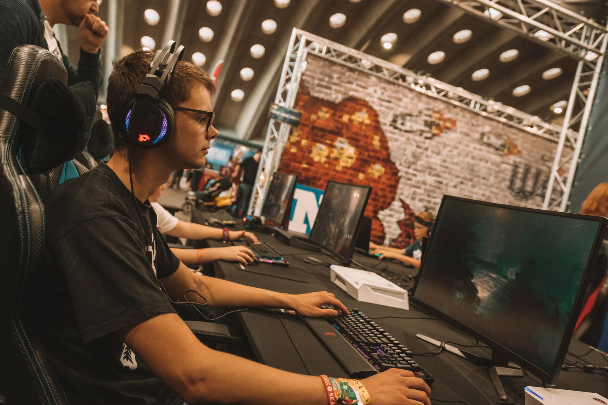

A sudden breakdown in team chemistry
In a recent and startling interview, the professional player known as Biguzera opened up about the internal struggles currently plaguing his team. While fans often see only the polished performances on stage, the reality behind the scenes is frequently much more complex and emotionally taxing. The core issue identified by the player is not a lack of individual skill, but rather a fundamental breakdown in the psychological foundation of the squad.
According to the reports surfacing from HLTV, the tension has reached a boiling point where the players no longer feel they can rely on one another during high-pressure situations. This lack of cohesion is a common pitfall in professional esports, where split-second decisions rely entirely on the confidence that your teammate will be in the right position at the right time. When that confidence evaporates, the entire tactical structure of a team begins to crumble.
The impact of trust on professional play
Trust serves as the invisible glue that holds a professional gaming roster together. In fast-paced tactical shooters or team-based battle arenas, players must play with an instinctual understanding of their teammates' movements. If a player hesitates because they doubt their teammate's ability to cover an angle or execute a utility play, the window of opportunity closes instantly. This hesitation is often what separates winning teams from losing ones.
I feel as a team we don't trust each other anymore.
Biguzera's admission is a heavy one, signaling that the team is likely entering a period of significant transition or crisis. Without trust, even the most mechanically gifted players will struggle to maintain consistency. The psychological weight of playing alongside teammates you do not believe in can lead to burnout, increased toxicity, and a downward spiral in tournament standings.
Common causes for esports team friction
While Biguzera has not specified a single catalyst for this rift, industry experts point to several recurring reasons why professional teams fall apart. Maintaining a high level of performance requires intense scrutiny, long practice hours, and constant criticism, all of which can erode personal relationships if not managed correctly by coaching staff.
When these factors combine, they create an environment of suspicion. Players begin to blame individuals for losses rather than analyzing systemic errors. This shift from a growth mindset to a blame-oriented mindset is often the death knell for a successful roster, making Biguzera's comments particularly ominous for the future of his organization.
The road to recovery or roster changes
The question now facing the organization is whether this issue can be resolved through intensive team building and coaching intervention, or if a complete roster overhaul is necessary. Some teams have successfully navigated these waters by bringing in sports psychologists to rebuild the mental framework of the players. Others find that once the trust is broken, the only way forward is to part ways and start fresh with new talent.
For Biguzera, the path forward remains uncertain. If the team can find a way to communicate transparently and hold each other accountable without resentment, they might emerge stronger. However, the public nature of these comments suggests that the internal damage may be deeper than a simple disagreement over tactics.
Looking at the broader competitive landscape
The volatility seen in Biguzera's situation is a reminder of how fragile success can be in the esports industry. One moment, a team is dominating the leaderboards, and the next, they are struggling with internal politics. The contrast between team cohesion and individual brilliance is a recurring theme in professional gaming history.
We often see the bright side of this volatility, where incredible individual performances can carry a team through even the most difficult periods. For instance, we recently witnessed how individual excellence can turn the tide in a match, much like in the case of Latto's Epic Ace Leads Legacy to Victory Over FUT. While Biguzera's team is currently struggling with the collective, the importance of individual impact remains a vital component of the game.
As the esports scene continues to grow, the management of player mental health and team dynamics will become just as important as tactical prowess. Organizations that prioritize the human element alongside the digital skill will likely be the ones that find long-term stability in this high-pressure environment.
See Also
If you enjoyed this Esports News article, check out Latto's Epic Ace Leads Legacy to Victory Over FUT for more useful reading.